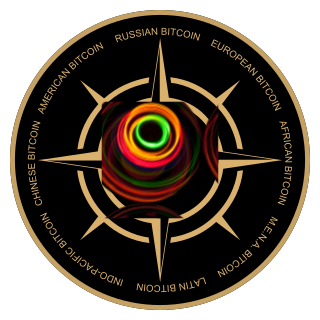

Народная монополия на деньги и право наций на само-биткойнификацию
Технологическая платформа Национальный Биткойн

Аннотация
Конкуренция и культурное разнообразие — залог развития. Наличие экономических и политических границ между штатами, странами, провинциями, территориями носит системообразующий характер.
Однако, на протяжении последних десятилетий в академических кругах, в государственной, макроэкономической и денежно-кредитной политике доминируют взгляды унификации (по сути, ультра-глобализации). Однополярный миропорядок и олигополия в мировых СМИ затруднили свободное политическое волеизъявление жителей всей планеты. Уникальные культуры, целые цивилизационные материки рискуют исчезнуть. В пылу борьбы за «разнообразие» по цвету кожи, сексуальным предпочтениям и гендерам реальное человеческое разнообразие гибнет под давлением глобального стандарта. Ценностный кризис уже оборачивается негативными экономическими последствиями. В результате глобального разделения труда цепочки поставок стали слишком хрупкими. Дефицит и рост цен все труднее списывать на пандемию. Несмотря на усилия ультра-глобалистов, в США и Евросоюзе растут центробежные настроения. Другие страны могут последовать в том же фарватере.
Главное оружие глобалистов (резервные фиатные валюты и стоящие за ними центральные банки) потеряло эффективность. Крах долларовой "пирамиды" перестал быть гипотетическим. Опасность ситуации не только создает окно возможностей, но и побуждает действовать на упреждение.
Национальный Биткойн — это социо-инженерная, идеологическая и технологическая основа для денег нового типа со всеобъемлющим первоначальным распределением, предназначенная для взаимосвязанных региональных содружеств. Сети Национальных Биткойнов могут смягчить шок от предстоящего экономического кризиса, глобальной гиперинфляции и дефрагментации стран и помочь в становлении новой системы организации проживания людей на планете.
Первая фаза эксперимента под названием «Биткойн» завершается, пришло время второй фазы.
Однако, на протяжении последних десятилетий в академических кругах, в государственной, макроэкономической и денежно-кредитной политике доминируют взгляды унификации (по сути, ультра-глобализации). Однополярный миропорядок и олигополия в мировых СМИ затруднили свободное политическое волеизъявление жителей всей планеты. Уникальные культуры, целые цивилизационные материки рискуют исчезнуть. В пылу борьбы за «разнообразие» по цвету кожи, сексуальным предпочтениям и гендерам реальное человеческое разнообразие гибнет под давлением глобального стандарта. Ценностный кризис уже оборачивается негативными экономическими последствиями. В результате глобального разделения труда цепочки поставок стали слишком хрупкими. Дефицит и рост цен все труднее списывать на пандемию. Несмотря на усилия ультра-глобалистов, в США и Евросоюзе растут центробежные настроения. Другие страны могут последовать в том же фарватере.
Главное оружие глобалистов (резервные фиатные валюты и стоящие за ними центральные банки) потеряло эффективность. Крах долларовой "пирамиды" перестал быть гипотетическим. Опасность ситуации не только создает окно возможностей, но и побуждает действовать на упреждение.
Национальный Биткойн — это социо-инженерная, идеологическая и технологическая основа для денег нового типа со всеобъемлющим первоначальным распределением, предназначенная для взаимосвязанных региональных содружеств. Сети Национальных Биткойнов могут смягчить шок от предстоящего экономического кризиса, глобальной гиперинфляции и дефрагментации стран и помочь в становлении новой системы организации проживания людей на планете.
Первая фаза эксперимента под названием «Биткойн» завершается, пришло время второй фазы.
Фиатные валюты перестали выполнять функции денег
Фиатные (фидуциарные) валюты, которые выполняют роль денег уже полсотни лет, являются инструментом политики, а не деньгами.
Люди этого не замечают в силу привычки, но фундаментальные проблемы имеют место. Фиатные валюты постоянно обесцениваются. Банковские вклады и инструменты денежного рынка не спасают от инфляции; люди вынуждены идти на риск фондового рынка. За транзакциями повсеместно следят, причем сомнительная законность этого накапливает общественное раздражение; ваши фиатные деньги могут в любой момент «заморозить» или конфисковать. Платежи нельзя проводить дистантно без вмешательства посредников, которые сами решают, какие расчеты проводить, а какие нет. Комиссионные платежи очень высоки.
Люди этого не замечают в силу привычки, но фундаментальные проблемы имеют место. Фиатные валюты постоянно обесцениваются. Банковские вклады и инструменты денежного рынка не спасают от инфляции; люди вынуждены идти на риск фондового рынка. За транзакциями повсеместно следят, причем сомнительная законность этого накапливает общественное раздражение; ваши фиатные деньги могут в любой момент «заморозить» или конфисковать. Платежи нельзя проводить дистантно без вмешательства посредников, которые сами решают, какие расчеты проводить, а какие нет. Комиссионные платежи очень высоки.
Биткойн не стал деньгами и оказался централизован вопреки своей изначальной философии
Биткойн поначалу казался отличным решением, но в итоге не получилось. От Биткойна ожидали того, что он станет пиринговыми электронными наличными. Однако Биткойн стал не деньгами, а очередным спекулятивным активом.
По состоянию на конец 2021 года существовало всего около девяти миллионов счетов с балансом, эквивалентным сумме, более пятисот долларов; количество реальных пользователей (не спекулянтов) не растет; волатильность очень высока. Энергозатраты на майнинг никак не соответствуют воспринимаемой обществом полезности Биткойна.
Нужно учесть ошибки и в этот раз изначально децентрализовать новый Биткойн не только в программном коде, но и ВНЕ протокола.
Обеспечение внедрения чисто пиринговых наличных требует не только технологического, но и социокультурного, и идеологического прорыва.
Так называемый Биткойн-максимализм немногими был воспринят и понят, хотя его идея проста: людям с общим культурным кодом выгоднее иметь общую армию, чем увязать в междоусобных войнах, воруя друг от друга разработчиков, инвесторов и пользователей.
Казалось бы низверженный Биткойн-максимализм в свете текущих глобальных событий обзавелся неожиданным потенциальным союзником. В роли новых евангелистов выступят национальные государства, которым угрожает гибель от рук международной финансовой, фармацевтической и ИТ-олигополии. Оригинальная идея Биткойна может заново возродиться на почве Биткойн-максимализма версии 2.0.
По состоянию на конец 2021 года существовало всего около девяти миллионов счетов с балансом, эквивалентным сумме, более пятисот долларов; количество реальных пользователей (не спекулянтов) не растет; волатильность очень высока. Энергозатраты на майнинг никак не соответствуют воспринимаемой обществом полезности Биткойна.
Нужно учесть ошибки и в этот раз изначально децентрализовать новый Биткойн не только в программном коде, но и ВНЕ протокола.
Обеспечение внедрения чисто пиринговых наличных требует не только технологического, но и социокультурного, и идеологического прорыва.
Так называемый Биткойн-максимализм немногими был воспринят и понят, хотя его идея проста: людям с общим культурным кодом выгоднее иметь общую армию, чем увязать в междоусобных войнах, воруя друг от друга разработчиков, инвесторов и пользователей.
Казалось бы низверженный Биткойн-максимализм в свете текущих глобальных событий обзавелся неожиданным потенциальным союзником. В роли новых евангелистов выступят национальные государства, которым угрожает гибель от рук международной финансовой, фармацевтической и ИТ-олигополии. Оригинальная идея Биткойна может заново возродиться на почве Биткойн-максимализма версии 2.0.
Территориальная конкуренция жизненно необходима
Даже сейчас, при значительной степени глобализации, большая часть экономической деятельности обычных людей носит локальный или национальный характер. Большинство людей редко совершают платежи за границу и получают деньги из-за рубежа. Люди в основном зарабатывают в местных предприятиях и покупают товары в местной рознице. По большому счету, идея глобальных денег носит для них абстрактный характер.
Любое вменяемое правительство не станет без оглядки принимать глобальные средства расчета внутри своей страны, а патриотически настроенные элиты будут этому однозначно враждебны. Биткойн не может быть исключением; его тоже воспринимают как угрозу. Во всех странах власти особенно настороженно относятся к трансграничным платежам частных лиц, потому что таким образом могут финансироваться антигосударственная деятельность, терроризм и криминал.
Но не преступный мир волнует власти в этой связи более всего, а то, что глобальный Биткойн удобен для ультра-глобалистов, стремящихся к экстремальной форме культурной и экономической унификации, которая вообще не предполагает в будущем значительной роли национальных государств. В противостоянии между суверенными государствами и растущим влиянием транснациональных корпораций первые несут огромные потери. Их чиновников подкупают. Их гражданам навязывают чуждое мировоззрение. За ними следят в сети. Ритейлеры, социальные сети и другие IT-гиганты открыто планируют введение собственных денежных суррогатов, что лишит все страны части налоговых поступлений.
Наличие границ — благо. Конкуренция между странами жизненно необходима.
Это проверенный, естественный механизм, который хорошо работал во все эпохи. Государство, которое упраздняет конкуренцию внутри себя, может довести своих граждан до нищеты. Однако на международной арене оно по-прежнему представляет ценность, стимулируя другие страны. Есть пример СССР. Введение восьмичасового рабочего дня, признание прав женщин, развитие атомной энергетики, покорение космоса и многое другое на западе — в огромной степени заслуга Советского Союза. А после распада социалистического лагеря союз демократических государств стал деградировать с ускорением.
Стирание политических и экономических границ рушит и границы нравственные. Смысл культурного разнообразия — в том числе в возможности сравнить себя с другими людьми, а значит — в способности посмотреть на себя со стороны, в стремлении быть объективным. Засилье глобальных культурных штампов могло показаться безобидным несколько десятилетий назад, но сегодня это уже проявилось в совершенно уродливых формах.
Любое вменяемое правительство не станет без оглядки принимать глобальные средства расчета внутри своей страны, а патриотически настроенные элиты будут этому однозначно враждебны. Биткойн не может быть исключением; его тоже воспринимают как угрозу. Во всех странах власти особенно настороженно относятся к трансграничным платежам частных лиц, потому что таким образом могут финансироваться антигосударственная деятельность, терроризм и криминал.
Но не преступный мир волнует власти в этой связи более всего, а то, что глобальный Биткойн удобен для ультра-глобалистов, стремящихся к экстремальной форме культурной и экономической унификации, которая вообще не предполагает в будущем значительной роли национальных государств. В противостоянии между суверенными государствами и растущим влиянием транснациональных корпораций первые несут огромные потери. Их чиновников подкупают. Их гражданам навязывают чуждое мировоззрение. За ними следят в сети. Ритейлеры, социальные сети и другие IT-гиганты открыто планируют введение собственных денежных суррогатов, что лишит все страны части налоговых поступлений.
Наличие границ — благо. Конкуренция между странами жизненно необходима.
Это проверенный, естественный механизм, который хорошо работал во все эпохи. Государство, которое упраздняет конкуренцию внутри себя, может довести своих граждан до нищеты. Однако на международной арене оно по-прежнему представляет ценность, стимулируя другие страны. Есть пример СССР. Введение восьмичасового рабочего дня, признание прав женщин, развитие атомной энергетики, покорение космоса и многое другое на западе — в огромной степени заслуга Советского Союза. А после распада социалистического лагеря союз демократических государств стал деградировать с ускорением.
Стирание политических и экономических границ рушит и границы нравственные. Смысл культурного разнообразия — в том числе в возможности сравнить себя с другими людьми, а значит — в способности посмотреть на себя со стороны, в стремлении быть объективным. Засилье глобальных культурных штампов могло показаться безобидным несколько десятилетий назад, но сегодня это уже проявилось в совершенно уродливых формах.
Децентрализация с помощью национальных границ
Сети Биткойна нужно вводить на национальном и региональном уровне, когда Национальные биткойны одной отдельной сети распределяются между гражданами нескольких соседних государств с тесными связями, которые борются за рынки друг друга и экономически образуют потенциально самодостаточную территорию. Региональные «стены» снизят темпы роста глобальной олигополии на новый Биткойн, а может и предотвратят его. Разбиение на множество независимых территориальных сетей Биткойна полезно и в контексте проблемы масштабируемости.
Конечно, программный протокол сети не знает границ. Административный контроль для создания и поддержания отдельных территорий организовать крайне сложно. Но это и не нужно: если выпустить в первом блоке хотя бы 80% всех монет и сразу их раздать жителям определенной территории, то граница ареала образуется сама по себе. Вместе с перемещением людей границы будут постепенно размываться, но это не выключит основные эффекты такого акта разделения на валютные зоны.
Конечно, программный протокол сети не знает границ. Административный контроль для создания и поддержания отдельных территорий организовать крайне сложно. Но это и не нужно: если выпустить в первом блоке хотя бы 80% всех монет и сразу их раздать жителям определенной территории, то граница ареала образуется сама по себе. Вместе с перемещением людей границы будут постепенно размываться, но это не выключит основные эффекты такого акта разделения на валютные зоны.
Децентрализация через массовую раздачу монет
Как минимум 80% Национальных биткойнов каждой сети должны быть бесплатно распределены в самом начале на определенной самодостаточной территории как можно большему количеству людей, как можно быстрее, насколько это возможно — поровну всем. Оставшиеся как максимум 20% эмиссии отходят на оплату функционирования сети (майнинг или его аналог). Устойчивый к атакам квантовых компьютеров и не требующий энергозатрат механизм консенсуса уже есть.
В массовой раздаче есть глубокий экономический смысл. Люди, живущие на территориях, которые они в состоянии защитить, на которых они производят товары и услуги, торгуют и обмениваются ими — именно они и являются изначальным источником денег, а вовсе не какая-то абстрактная процедура эмиссии, навязанная горсткой политиков и бюрократов. Поскольку Национальные биткойны полностью распределяются среди народа, те, кто обычно пользовался преимуществом близости к денежному «печатному станку», не получают никаких незаслуженных привилегий.
Бесплатная раздача дает ясное юридическое обоснование происхождения средств. Все Национальные биткойны изначально возникают в рамках всем понятного механизма.
Сетевые структуры приобретают ценность и значение при большом количестве узлов. Наличие одинаковой учетной единицы у большого количества людей позволяет этой единице стать деньгами.
В массовой раздаче есть глубокий экономический смысл. Люди, живущие на территориях, которые они в состоянии защитить, на которых они производят товары и услуги, торгуют и обмениваются ими — именно они и являются изначальным источником денег, а вовсе не какая-то абстрактная процедура эмиссии, навязанная горсткой политиков и бюрократов. Поскольку Национальные биткойны полностью распределяются среди народа, те, кто обычно пользовался преимуществом близости к денежному «печатному станку», не получают никаких незаслуженных привилегий.
Бесплатная раздача дает ясное юридическое обоснование происхождения средств. Все Национальные биткойны изначально возникают в рамках всем понятного механизма.
Сетевые структуры приобретают ценность и значение при большом количестве узлов. Наличие одинаковой учетной единицы у большого количества людей позволяет этой единице стать деньгами.
Полезность для государства и бизнеса
Каждая территория выбирает свой способ изначального распределения монет.
Для составления базы данных уникальных живых получателей существует как минимум три способа. Во-первых, физический, то есть биометрия. По этому пути идут некоторые проекты BrightID dar.is), и далее используются для прямой адресной рассылки монет.
Механизм распределения может быть совмещен с полезными для государства и местного бизнеса инициативами.
Приведем лишь три примера.
1.Формально, в национальных пределах у государства нет финансовых ограничений на расходы, было бы чем обосновать печать денег. Безусловный обмен Национальных биткойнов граждан на местную фиатную валюту — прекрасный повод для допэмиссии, увеличивающий ВВП и внутренний спрос. Через Национальные биткойны удобно проводить целевое финансирование, отслеживать движение бюджетных средств, осуществлять раздачу «вертолетных денег».
2.Национальный Биткойн может стимулировать иностранный спрос на отечественную продукцию. Для этого правительство гарантирует выкуп Национальных биткойнов у местных предприятий. Их руководство, зная, что Национальные биткойны уже находятся в руках иностранцев, проводит маркетинговые мероприятия на соответствующих рынках. Таким образом, государство стимулирует производство и расширяет доступ отечественных предприятий на зарубежные рынки. Органы власти, которые научатся применять инструментарий Национального Биткойна, увеличат свое влияние. Люди и предприятия также получат выгоду.
3.Для поддержки внутреннего спроса Национальные биткойны могут распространяться в форме скидок и т. н. кэшбэков. Национальные биткойны — это удобная цифровая наличность, идеально подходящая для потребительского сектора. Обычная фидуциарная национальная валюта не пострадает: двухконтурные денежные системы доказали свою эффективность.
Идущее в наши дни разделение мира на новые зоны политического влияния создает конкуренцию валют за право стать резервными. Использование Национальных биткойнов в паре с национальной фиатной валютой повышает её шансы на получение статуса резервной.
Для составления базы данных уникальных живых получателей существует как минимум три способа. Во-первых, физический, то есть биометрия. По этому пути идут некоторые проекты BrightID dar.is), и далее используются для прямой адресной рассылки монет.
Механизм распределения может быть совмещен с полезными для государства и местного бизнеса инициативами.
Приведем лишь три примера.
1.Формально, в национальных пределах у государства нет финансовых ограничений на расходы, было бы чем обосновать печать денег. Безусловный обмен Национальных биткойнов граждан на местную фиатную валюту — прекрасный повод для допэмиссии, увеличивающий ВВП и внутренний спрос. Через Национальные биткойны удобно проводить целевое финансирование, отслеживать движение бюджетных средств, осуществлять раздачу «вертолетных денег».
2.Национальный Биткойн может стимулировать иностранный спрос на отечественную продукцию. Для этого правительство гарантирует выкуп Национальных биткойнов у местных предприятий. Их руководство, зная, что Национальные биткойны уже находятся в руках иностранцев, проводит маркетинговые мероприятия на соответствующих рынках. Таким образом, государство стимулирует производство и расширяет доступ отечественных предприятий на зарубежные рынки. Органы власти, которые научатся применять инструментарий Национального Биткойна, увеличат свое влияние. Люди и предприятия также получат выгоду.
3.Для поддержки внутреннего спроса Национальные биткойны могут распространяться в форме скидок и т. н. кэшбэков. Национальные биткойны — это удобная цифровая наличность, идеально подходящая для потребительского сектора. Обычная фидуциарная национальная валюта не пострадает: двухконтурные денежные системы доказали свою эффективность.
Идущее в наши дни разделение мира на новые зоны политического влияния создает конкуренцию валют за право стать резервными. Использование Национальных биткойнов в паре с национальной фиатной валютой повышает её шансы на получение статуса резервной.
Внедрение. Роль сообщества National Bitcoin
Бесспорное преимущество местных комплементарных валют во времена кризиса подтачивает авторитет центральной власти, а это опасно. Например, в условиях кризиса и безработицы Великой депрессии комплементарная валюта австрийского города Вёргль оживила производство и внутренний спрос, в то время как остальная часть континента продолжала тонуть в экономическом хаосе. Чудо Вёргля вдохновило шесть соседних городов скопировать его денежную систему, а Эдуард Даладье (премьер-министр Франции) даже нанес туда визит, чтобы увидеть валюту в действии. Именно оглушительный успех эксперимента и тот факт, что более двухсот соседних городов уже готовились воспроизвести его, послужило причиной объявления валюты Вёргля вне закона. Заметим, что немедленно вернувшееся социальное отчаяние и экономическая депрессия послужили питательной средой для зарождения нацизма.
Стоит учитывать современный опыт кредитной системы швейцарского делового кооператива WIR, долгие десятилетия (с 1934 года) остающегося в согласии с властями. WIR действует как коммерческий кредитный союз, через который десятки тысяч малых и средних предприятий могут получить доступ к финансированию в форме франков WIR по процентной ставке менее 1%. Выдаваемая в виде кредитов, эта валюта НЕ МОЖЕТ БЫТЬ КОНВЕРТИРОВАНА в обычные деньги или девальвирована. Исследования Стоддера и Лиетаера (2016 г.) показывают, что эта система оказывает стабилизирующее влияние на макроэкономические циклы. В периоды экономического бума малый бизнес, как правило, предпочитает банковские кредиты, а в периоды спада, когда банковские процентные ставки растут, они обращаются к кредитам WIR. Есть и другие похожие успешные примеры: IRTA, Sardex, RES, PuntoTRANSacciones, Banco Palmas, Bangla-Pesa.Итак, правило таково: необходимо избегать конвертации.
Конвертация (обмен валют) не есть строгая необходимость. Хотя среди энтузиастов общинных и территориальных валют всегда находится много мечтателей, стремящихся победить бедность и лишения и критически относящихся к зарабатыванию денег ради них самих, всё таки основной причиной обращения к Национальным биткойнам явится экономический шок на стороне спроса, приводящий к низкому обороту и безработице. Поэтому прежде всего необходимо, чтобы участники системы покупали товары друг у друга, внутри территории.
Стабильность цен является ключевым фактором экономического развития. Скачки цен мешают людям видеть настоящие сигналы рынка и поддерживать эффективное распределение ресурсов. В то время как плавные изменения не мешают экономическому видению, внезапность и волатильность ухудшают ситуацию.
Но сдерживать нужно не номинальные итоговые цены, а первопричину ненужных спекуляций. Необходимо выстраивать как можно более короткие замкнутые цепочки поставок.
Роль сообщества National Bitcoin — заполнить технологическую брешь для таких цепочек поставок.
Стоит учитывать современный опыт кредитной системы швейцарского делового кооператива WIR, долгие десятилетия (с 1934 года) остающегося в согласии с властями. WIR действует как коммерческий кредитный союз, через который десятки тысяч малых и средних предприятий могут получить доступ к финансированию в форме франков WIR по процентной ставке менее 1%. Выдаваемая в виде кредитов, эта валюта НЕ МОЖЕТ БЫТЬ КОНВЕРТИРОВАНА в обычные деньги или девальвирована. Исследования Стоддера и Лиетаера (2016 г.) показывают, что эта система оказывает стабилизирующее влияние на макроэкономические циклы. В периоды экономического бума малый бизнес, как правило, предпочитает банковские кредиты, а в периоды спада, когда банковские процентные ставки растут, они обращаются к кредитам WIR. Есть и другие похожие успешные примеры: IRTA, Sardex, RES, PuntoTRANSacciones, Banco Palmas, Bangla-Pesa.Итак, правило таково: необходимо избегать конвертации.
Конвертация (обмен валют) не есть строгая необходимость. Хотя среди энтузиастов общинных и территориальных валют всегда находится много мечтателей, стремящихся победить бедность и лишения и критически относящихся к зарабатыванию денег ради них самих, всё таки основной причиной обращения к Национальным биткойнам явится экономический шок на стороне спроса, приводящий к низкому обороту и безработице. Поэтому прежде всего необходимо, чтобы участники системы покупали товары друг у друга, внутри территории.
Стабильность цен является ключевым фактором экономического развития. Скачки цен мешают людям видеть настоящие сигналы рынка и поддерживать эффективное распределение ресурсов. В то время как плавные изменения не мешают экономическому видению, внезапность и волатильность ухудшают ситуацию.
Но сдерживать нужно не номинальные итоговые цены, а первопричину ненужных спекуляций. Необходимо выстраивать как можно более короткие замкнутые цепочки поставок.
Роль сообщества National Bitcoin — заполнить технологическую брешь для таких цепочек поставок.